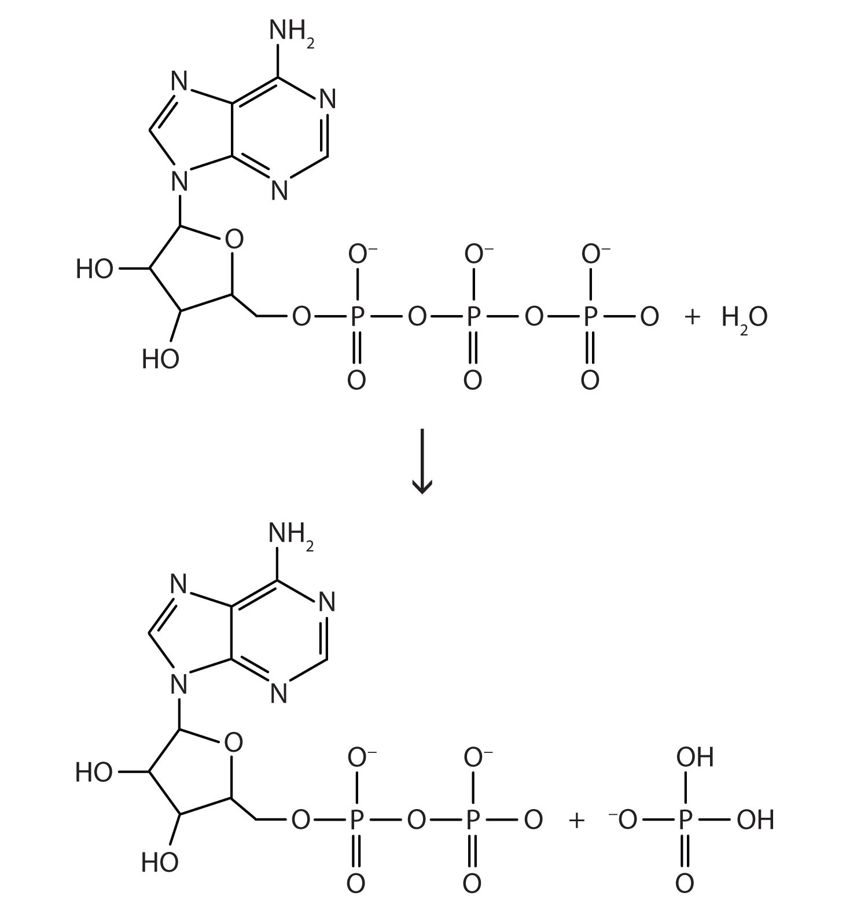

Metabolism, which we will study in Chapter 20 "Energy Metabolism", is the collective term for the chemical reactions that occur in cells and provide energy to keep cells alive. Some of the energy from metabolism is in the form of heat, and some animals use this heat to regulate their body temperatures. Such warm-blooded animals are called endotherms. In endotherms, problems with metabolism can lead to fluctuations in body temperature. When humans get sick, for instance, our body temperatures can rise higher than normal; we develop a fever. When food is scarce (especially in winter), some endotherms go into a state of controlled decreased metabolism called hibernation. During hibernation, the body temperatures of these endotherms actually decrease. In hot weather or when feverish, endotherms will pant or sweat to rid their bodies of excess heat.
Table 7.1 Average Body Temperatures of Selected Endotherms
| Endotherm | Body Temperature (°F) | Body Temperature (°C) |
|---|---|---|
| bird | up to 110 | up to 43.5 |
| cat | 101.5 | 38.6 |
| dog | 102 | 38.9 |
| horse | 100.0 | 37.8 |
| human | 98.6 | 37.0 |
| pig | 102.5 | 39.2 |
Ectotherms, sometimes called cold-blooded animals, do not use the energy of metabolism to regulate body temperature. Instead, they depend on external energy sources, such as sunlight. Fish, for example, will seek out water of different temperatures to regulate body temperature. The amount of energy available is directly related to the metabolic rate of the animal. When energy is scarce, ectotherms may also hibernate.
The connection between metabolism and body temperature is a reminder that energy and chemical reactions are intimately related. A basic understanding of this relationship is especially important when those chemical reactions occur within our own bodies.
Energy is a vital component of the world around us. Nearly every physical and chemical process, including all the chemical reactions discussed in previous chapters, occurs with a simultaneous energy change. In this chapter, we will explore the nature of energy and how energy and chemistry are related.
EnergyThe ability to do work. is the ability to do work. You can understand what this means by thinking about yourself when you feel “energetic.” You feel ready to go—to jump up and get something done. When you have a lot of energy, you can perform a lot of work. By contrast, if you do not feel energetic, you have very little desire to do much of anything. This description is not only applicable to you but also to all physical and chemical processes. The quantity of work that can be done is related to the quantity of energy available to do it.
Energy can be transferred from one object to another if the objects have different temperatures. The transfer of energy due to temperature differences is called heatThe transfer of energy from one part of the universe to another due to temperature differences.. For example, if you hold an ice cube in your hand, the ice cube slowly melts as energy in the form of heat is transferred from your hand to the ice. As your hand loses energy, it starts to feel cold.
Because of their interrelationships, energy, work, and heat have the same units. The SI unit of energy, work, and heat is the jouleThe SI unit of energy, work, and heat. (J). A joule is a tiny amount of energy. For example, it takes about 4 J to warm 1 mL of H2O by 1°C. Many processes occur with energy changes in thousands of joules, so the kilojoule (kJ) is also common.
Another unit of energy, used widely in the health professions and everyday life, is the calorieA unit of energy widely used in the health professions and everyday life. (cal). The calorie was initially defined as the amount of energy needed to warm 1 g of H2O by 1°C, but in modern times, the calorie is related directly to the joule, as follows:
1 cal = 4.184 JWe can use this relationship to convert quantities of energy, work, or heat from one unit to another.
The calorie is used in nutrition to express the energy content of foods. However, because a calorie is a rather small quantity, nutritional energies are usually expressed in kilocalories (kcal), also called Calories (capitalized; Cal). For example, a candy bar may provide 120 Cal (nutritional calories) of energy, which is equal to 120,000 cal. Figure 7.1 "Nutritional Energy" shows an example. Proteins and carbohydrates supply 4 kcal/g, while fat supplies 9 kcal/g.
Although the joule is the proper SI unit for energy, we will use the calorie or the kilocalorie (or Calorie) in this chapter because they are widely used by health professionals.
The energy content of a single serving of bread is 70.0 Cal. What is the energy content in calories? In joules?
Solution
This is a simple conversion-factor problem. Using the relationship 1 Cal = 1,000 cal, we can answer the first question with a one-step conversion:
Then we convert calories into joules
and then kilojoules
The energy content of bread comes mostly from carbohydrates.
The energy content of one cup of honey is 1,030 Cal. What is its energy content in calories and joules?
Most health professionals agree that exercise is a valuable component of a healthy lifestyle. Exercise not only strengthens the body and develops muscle tone but also expends energy. After obtaining energy from the foods we eat, we need to expend that energy somehow, or our bodies will store it in unhealthy ways.
Like the energy content in food, the energy expenditures of exercise are also reported in kilocalories, usually kilocalories per hour of exercise. These expenditures vary widely, from about 440 kcal/h for walking at a speed of 4 mph to 1,870 kcal/h for mountain biking at 20 mph. Table 7.2 "Energy Expenditure of a 180-Pound Person during Selected Exercises" lists the energy expenditure for a variety of exercises.
Table 7.2 Energy Expenditure of a 180-Pound Person during Selected Exercises
| Exercise | Energy Expended (kcal/h) |
|---|---|
| aerobics, low-level | 325 |
| basketball | 940 |
| bike riding, 20 mph | 830 |
| golfing, with cart | 220 |
| golfing, carrying clubs | 425 |
| jogging, 7.5 mph | 950 |
| racquetball | 740 |
| skiing, downhill | 520 |
| soccer | 680 |
| walking upstairs | 1,200 |
| yoga | 280 |
Because some forms of exercise use more energy than others, anyone considering a specific exercise regimen should consult with his or her physician first.
What is the relationship between energy and heat?
What units are used to express energy and heat?
Heat is the exchange of energy from one part of the universe to another. Heat and energy have the same units.
Joules and calories are the units of energy and heat.
Define energy.
What is heat?
What is the relationship between a calorie and a joule? Which unit is larger?
What is the relationship between a calorie and a kilocalorie? Which unit is larger?
Express 1,265 cal in kilocalories and in joules.
Express 9,043.3 J in calories and in kilocalories.
One kilocalorie equals how many kilojoules?
One kilojoule equals how many kilocalories?
Many nutrition experts say that an average person needs 2,000 Cal per day from his or her diet. How many joules is this?
Baby formula typically has 20.0 Cal per ounce. How many ounces of formula should a baby drink per day if the RDI is 850 Cal?
Energy is the ability to do work.
1 cal = 4.184 J; the calorie is larger.
1.265 kcal; 5,293 J
1 kcal = 4.184 kJ
8.4 × 106 J
Heat is a familiar manifestation of energy. When we touch a hot object, energy flows from the hot object into our fingers, and we perceive that incoming energy as the object being “hot.” Conversely, when we hold an ice cube in our palms, energy flows from our hand into the ice cube, and we perceive that loss of energy as “cold.” In both cases, the temperature of the object is different from the temperature of our hand, so we can conclude that differences in temperatures are the ultimate cause of heat transfer.
Suppose we consider the transfer of heat from the opposite perspective—namely, what happens to a system that gains or loses heat? Generally, the system’s temperature changes. (We will address a few exceptions later.) The greater the original temperature difference, the greater the transfer of heat, and the greater the ultimate temperature change. The relationship between the amount of heat transferred and the temperature change can be written as
heat ∝ ΔTwhere ∝ means “is proportional to” and ΔT is the change in temperature of the system. Any change in a variable is always defined as “the final value minus the initial value” of the variable, so ΔT is Tfinal − Tinitial. In addition, the greater the mass of an object, the more heat is needed to change its temperature. We can include a variable representing mass (m) to the proportionality as follows:
heat ∝ mΔTTo change this proportionality into an equality, we include a proportionality constant. The proportionality constant is called the specific heatA proportionality constant that relates heat to a temperature change., symbolized by c:
heat = mcΔTEvery substance has a characteristic specific heat, which is reported in units of cal/g·°C or cal/g·K, depending on the units used to express ΔT. The specific heat of a substance is the amount of energy that must be transferred to or from 1 g of that substance to change its temperature by 1°. Table 7.3 "Specific Heats of Selected Substances" lists the specific heats for various materials.
Table 7.3 Specific Heats of Selected Substances
| Substance | c (cal/g·°C) |
|---|---|
| aluminum (Al) | 0.215 |
| aluminum oxide (Al2O3) | 0.305 |
| benzene (C6H6) | 0.251 |
| copper (Cu) | 0.092 |
| ethanol (C2H6O) | 0.578 |
| hexane (C6H14) | 0.394 |
| hydrogen (H2) | 3.419 |
| ice [H2O(s)] | 0.492 |
| iron (Fe) | 0.108 |
| iron(III) oxide (Fe2O3) | 0.156 |
| mercury (Hg) | 0.033 |
| oxygen (O2) | 0.219 |
| sodium chloride (NaCl) | 0.207 |
| steam [H2O(g)] | 0.488 |
| water [H2O(ℓ)] | 1.00 |
The proportionality constant c is sometimes referred to as the specific heat capacity or (incorrectly) the heat capacity.
The direction of heat flow is not shown in heat = mcΔT. If energy goes into an object, the total energy of the object increases, and the values of heat ΔT are positive. If energy is coming out of an object, the total energy of the object decreases, and the values of heat and ΔT are negative.
What quantity of heat is transferred when a 150.0 g block of iron metal is heated from 25.0°C to 73.3°C? What is the direction of heat flow?
Solution
We can use heat = mcΔT to determine the amount of heat, but first we need to determine ΔT. Because the final temperature of the iron is 73.3°C and the initial temperature is 25.0°C, ΔT is as follows:
ΔT = Tfinal − Tinitial = 73.3°C − 25.0°C = 48.3°CThe mass is given as 150.0 g, and Table 7.3 "Specific Heats of Selected Substances" gives the specific heat of iron as 0.108 cal/g·°C. Substitute the known values into heat = mcΔT and solve for amount of heat:
Note how the gram and °C units cancel algebraically, leaving only the calorie unit, which is a unit of heat. Because the temperature of the iron increases, energy (as heat) must be flowing into the metal.
What quantity of heat is transferred when a 295.5 g block of aluminum metal is cooled from 128.0°C to 22.5°C? What is the direction of heat flow?
A 10.3 g sample of a reddish-brown metal gave off 71.7 cal of heat as its temperature decreased from 97.5°C to 22.0°C. What is the specific heat of the metal? Can you identify the metal from the data in Table 7.3 "Specific Heats of Selected Substances"?
Solution
The question gives us the heat, the final and initial temperatures, and the mass of the sample. The value of ΔT is as follows:
ΔT = Tfinal − Tinitial = 22.0°C − 97.5°C = −75.5°CIf the sample gives off 71.7 cal, it loses energy (as heat), so the value of heat is written as a negative number, −71.7 cal. Substitute the known values into heat = mcΔT and solve for c:
−71.7 cal = (10.3 g)(c)(−75.5°C) c = 0.0923 cal/g·°CThis value for specific heat is very close to that given for copper in Table 7.3 "Specific Heats of Selected Substances".
A 10.7 g crystal of sodium chloride (NaCl) had an initial temperature of 37.0°C. What is the final temperature of the crystal if 147 cal of heat were supplied to it?
Describe the relationship between heat transfer and the temperature change of an object.
Heat is equal to the product of the mass, the change in temperature, and a proportionality constant called the specific heat.
A pot of water is set on a hot burner of a stove. What is the direction of heat flow?
Some uncooked macaroni is added to a pot of boiling water. What is the direction of heat flow?
How much energy in calories is required to heat 150 g of H2O from 0°C to 100°C?
How much energy in calories is required to heat 125 g of Fe from 25°C to 150°C?
If 250 cal of heat were added to 43.8 g of Al at 22.5°C, what is the final temperature of the aluminum?
If 195 cal of heat were added to 33.2 g of Hg at 56.2°C, what is the final temperature of the mercury?
A sample of copper absorbs 145 cal of energy, and its temperature rises from 37.8°C to 41.7°C. What is the mass of the copper?
A large, single crystal of sodium chloride absorbs 98.0 cal of heat. If its temperature rises from 22.0°C to 29.7°C, what is the mass of the NaCl crystal?
If 1.00 g of each substance in Table 7.3 "Specific Heats of Selected Substances" were to absorb 100 cal of heat, which substance would experience the largest temperature change?
If 1.00 g of each substance in Table 7.3 "Specific Heats of Selected Substances" were to absorb 100 cal of heat, which substance would experience the smallest temperature change?
Determine the heat capacity of a substance if 23.6 g of the substance gives off 199 cal of heat when its temperature changes from 37.9°C to 20.9°C.
What is the heat capacity of gold if a 250 g sample needs 133 cal of energy to increase its temperature from 23.0°C to 40.1°C?
Heat flows into the pot of water.
15,000 cal
49.0°C
404 g
Mercury would experience the largest temperature change.
0.496 cal/g·°C
Depending on the surrounding conditions, normal matter usually exists as one of three phases: solid, liquid, or gas.
A phase changeA physical process in which a substance goes from one phase to another. is a physical process in which a substance goes from one phase to another. Usually the change occurs when adding or removing heat at a particular temperature, known as the melting point or the boiling point of the substance. The melting pointThe temperature at which a substance goes from a solid to a liquid (or from a liquid to a solid). is the temperature at which the substance goes from a solid to a liquid (or from a liquid to a solid). The boiling pointThe temperature at which a substance goes from a liquid to a gas (or from a gas to a liquid). is the temperature at which a substance goes from a liquid to a gas (or from a gas to a liquid). The nature of the phase change depends on the direction of the heat transfer. Heat going into a substance changes it from a solid to a liquid or a liquid to a gas. Removing heat from a substance changes a gas to a liquid or a liquid to a solid.
Two key points are worth emphasizing. First, at a substance’s melting point or boiling point, two phases can exist simultaneously. Take water (H2O) as an example. On the Celsius scale, H2O has a melting point of 0°C and a boiling point of 100°C. At 0°C, both the solid and liquid phases of H2O can coexist. However, if heat is added, some of the solid H2O will melt and turn into liquid H2O. If heat is removed, the opposite happens: some of the liquid H2O turns into solid H2O. A similar process can occur at 100°C: adding heat increases the amount of gaseous H2O, while removing heat increases the amount of liquid H2O (Figure 7.2 "The Boiling Point of Water").
Water is a good substance to use as an example because many people are already familiar with it. Other substances have melting points and boiling points as well.
Second, the temperature of a substance does not change as the substance goes from one phase to another. In other words, phase changes are isothermalA process that occurs at constant temperature. (isothermal means “constant temperature”). Again, consider H2O as an example. Solid water (ice) can exist at 0°C. If heat is added to ice at 0°C, some of the solid changes phase to make liquid, which is also at 0°C. Remember, the solid and liquid phases of H2O can coexist at 0°C. Only after all of the solid has melted into liquid does the addition of heat change the temperature of the substance.
For each phase change of a substance, there is a characteristic quantity of heat needed to perform the phase change per gram (or per mole) of material. The heat of fusionThe amount of heat per gram or per mole required for a phase change that occurs at the melting point. (ΔHfus) is the amount of heat per gram (or per mole) required for a phase change that occurs at the melting point. The heat of vaporizationThe amount of heat per gram or per mole required for a phase change that occurs at the boiling point. (ΔHvap) is the amount of heat per gram (or per mole) required for a phase change that occurs at the boiling point. If you know the total number of grams or moles of material, you can use the ΔHfus or the ΔHvap to determine the total heat being transferred for melting or solidification using these expressions:
heat = n × ΔHfus (where n is the number of moles) or heat = m × ΔHfus (where m is the mass in grams)For the boiling or condensation, use these expressions:
heat = n × ΔHvap (where n is the number of moles) or heat = m × ΔHvap (where m is the mass in grams)Remember that a phase change depends on the direction of the heat transfer. If heat transfers in, solids become liquids, and liquids become solids at the melting and boiling points, respectively. If heat transfers out, liquids solidify, and gases condense into liquids.
How much heat is necessary to melt 55.8 g of ice (solid H2O) at 0°C? The heat of fusion of H2O is 79.9 cal/g.
Solution
We can use the relationship between heat and the heat of fusion to determine how many joules of heat are needed to melt this ice:
heat = m × ΔHfusHow much heat is necessary to vaporize 685 g of H2O at 100°C? The heat of vaporization of H2O is 540 cal/g.
Table 7.4 "Heats of Fusion and Vaporization for Selected Substances" lists the heats of fusion and vaporization for some common substances. Note the units on these quantities; when you use these values in problem solving, make sure that the other variables in your calculation are expressed in units consistent with the units in the specific heats or the heats of fusion and vaporization.
Table 7.4 Heats of Fusion and Vaporization for Selected Substances
| Substance | ΔHfus (cal/g) | ΔHvap (cal/g) |
|---|---|---|
| aluminum (Al) | 94.0 | 2,602 |
| gold (Au) | 15.3 | 409 |
| iron (Fe) | 63.2 | 1,504 |
| water (H2O) | 79.9 | 540 |
| sodium chloride (NaCl) | 123.5 | 691 |
| ethanol (C2H5OH) | 45.2 | 200.3 |
| benzene (C6H6) | 30.4 | 94.1 |
There is also a phase change where a solid goes directly to a gas:
solid → gasThis phase change is called sublimation. Each substance has a characteristic heat of sublimation associated with this process. For example, the heat of sublimation (ΔHsub) of H2O is 620 cal/g.
We encounter sublimation in several ways. You may already be familiar with dry ice, which is simply solid carbon dioxide (CO2). At −78.5°C (−109°F), solid carbon dioxide sublimes, changing directly from the solid phase to the gas phase:
Solid carbon dioxide is called dry ice because it does not pass through the liquid phase. Instead, it does directly to the gas phase. (Carbon dioxide can exist as liquid but only under high pressure.) Dry ice has many practical uses, including the long-term preservation of medical samples.
Even at temperatures below 0°C, solid H2O will slowly sublime. For example, a thin layer of snow or frost on the ground may slowly disappear as the solid H2O sublimes, even though the outside temperature may be below the freezing point of water. Similarly, ice cubes in a freezer may get smaller over time. Although frozen, the solid water slowly sublimes, redepositing on the colder cooling elements of the freezer, which necessitates periodic defrosting. (Frost-free freezers minimize this redeposition.) Lowering the temperature in a freezer will reduce the need to defrost as often.
Under similar circumstances, water will also sublime from frozen foods (e.g., meats or vegetables), giving them an unattractive, mottled appearance called freezer burn. It is not really a “burn,” and the food has not necessarily gone bad, although it looks unappetizing. Freezer burn can be minimized by lowering a freezer’s temperature and by wrapping foods tightly so water does not have any space to sublime into.
Explain what happens when heat flows into or out of a substance at its melting point or boiling point.
How does the amount of heat required for a phase change relate to the mass of the substance?
The energy goes into changing the phase, not the temperature.
The amount of heat is a constant per gram of substance.
How much energy is needed to melt 43.8 g of Au at its melting point of 1,064°C?
How much energy is given off when 563.8 g of NaCl solidifies at its freezing point of 801°C?
What mass of ice can be melted by 558 cal of energy?
How much ethanol (C2H5OH) in grams can freeze at its freezing point if 1,225 cal of heat are removed?
What is the heat of vaporization of a substance if 10,776 cal are required to vaporize 5.05 g? Express your final answer in joules per gram.
If 1,650 cal of heat are required to vaporize a sample that has a heat of vaporization of 137 cal/g, what is the mass of the sample?
What is the heat of fusion of water in calories per mole?
What is the heat of vaporization of benzene (C6H6) in calories per mole?
What is the heat of vaporization of gold in calories per mole?
What is the heat of fusion of iron in calories per mole?
670 cal
6.98 g
8,930 J/g
1,440 cal/mol
80,600 cal/mol
What happens when you take a basketball, place it halfway up a playground slide, and then let it go? The basketball rolls down the slide. What happens if you do it again? Does the basketball roll down the slide? It should.
If you were to perform this experiment over and over again, do you think the basketball would ever roll up the slide? Probably not. Why not? Well, for starters, in all of our experience, the basketball has always moved to a lower position when given the opportunity. The gravitational attraction of Earth exerts a force on the basketball, and given the chance, the basketball will move down. We say that the basketball is going to a lower gravitational potential energy. The basketball can move up the slide, but only if someone exerts some effort (that is, work) on the basketball. A general statement, based on countless observations over centuries of study, is that all objects tend to move spontaneously to a position of minimum energy unless acted on by some other force or object.
A similar statement can be made about atoms in compounds. Atoms bond together to form compounds because in doing so they attain lower energies than they possess as individual atoms. A quantity of energy, equal to the difference between the energies of the bonded atoms and the energies of the separated atoms, is released, usually as heat. That is, the bonded atoms have a lower energy than the individual atoms do. When atoms combine to make a compound, energy is always given off, and the compound has a lower overall energy. In making compounds, atoms act like a basketball on a playground slide; they move in the direction of decreasing energy.
We can reverse the process, just as with the basketball. If we put energy into a molecule, we can cause its bonds to break, separating a molecule into individual atoms. Bonds between certain specific elements usually have a characteristic energy, called the bond energyThe strength of interactions between atoms that make covalent bonds., that is needed to break the bond. The same amount of energy was liberated when the atoms made the chemical bond in the first place. The term bond energy is usually used to describe the strength of interactions between atoms that make covalent bonds. For atoms in ionic compounds attracted by opposite charges, the term lattice energyThe strength of interactions between atoms that make ionic bonds. is used. For now, we will deal with covalent bonds in molecules.
Although each molecule has its own characteristic bond energy, some generalizations are possible. For example, although the exact value of a C–H bond energy depends on the particular molecule, all C–H bonds have a bond energy of roughly the same value because they are all C–H bonds. It takes roughly 100 kcal of energy to break 1 mol of C–H bonds, so we speak of the bond energy of a C–H bond as being about 100 kcal/mol. A C–C bond has an approximate bond energy of 80 kcal/mol, while a C=C has a bond energy of about 145 kcal/mol. Table 7.5 "Approximate Bond Energies" lists the approximate bond energies of various covalent bonds.
Table 7.5 Approximate Bond Energies
| Bond | Bond Energy (kcal/mol) |
|---|---|
| C–H | 100 |
| C–O | 86 |
| C=O | 190 |
| C–N | 70 |
| C–C | 85 |
| C=C | 145 |
| C≡C | 200 |
| N–H | 93 |
| H–H | 105 |
When a chemical reaction occurs, the atoms in the reactants rearrange their chemical bonds to make products. The new arrangement of bonds does not have the same total energy as the bonds in the reactants. Therefore, when chemical reactions occur, there will always be an accompanying energy change.
In some reactions, the energy of the products is lower than the energy of the reactants. Thus, in the course of the reaction, the substances lose energy to the surrounding environment. Such reactions are exothermicA process that gives off energy. and can be represented by an energy-level diagram like the one in Figure 7.3 "Exothermic Reactions". In most cases, the energy is given off as heat (although a few reactions give off energy as light).
Figure 7.3 Exothermic Reactions

For an exothermic chemical reaction, energy is given off as reactants are converted to products.
In chemical reactions where the products have a higher energy than the reactants, the reactants must absorb energy from their environment to react. These reactions are endothermicA process that absorbs energy. and can be represented by an energy-level diagram like the one shown in Figure 7.4 "Endothermic Reactions".
Figure 7.4 Endothermic Reactions

For an endothermic chemical reaction, energy is absorbed as reactants are converted to products.
Exothermic and endothermic reactions can be thought of as having energy as either a product of the reaction or a reactant. Exothermic reactions give off energy, so energy is a product. Endothermic reactions require energy, so energy is a reactant.
Is each chemical reaction exothermic or endothermic?
Solution
Is each chemical reaction exothermic or endothermic?
H2(g) + F2(g) → 2HF (g) + 130 kcal
2C(s) + H2(g) + 5.3 kcal → C2H2(g)
What is the connection between energy and chemical bonds?
Why does energy change during the course of a chemical reaction?
Chemical bonds have a certain energy that is dependent on the elements in the bond and the number of bonds between the atoms.
Energy changes because bonds rearrange to make new bonds with different energies.
Using the data in Table 7.5 "Approximate Bond Energies", calculate the energy of one C–H bond (as opposed to 1 mol of C–H bonds).
Using the data in Table 7.5 "Approximate Bond Energies", calculate the energy of one C=C bond (as opposed to 1 mol of C=C bonds).
Is a bond-breaking process exothermic or endothermic?
Is a bond-making process exothermic or endothermic?
Is each chemical reaction exothermic or endothermic?
Is each chemical reaction exothermic or endothermic?
1.661 × 10−19 cal
endothermic
The chemistry of the human body, or any living organism, is very complex. Even so, the chemical reactions found in the human body follow the same principles of energy that other chemical reactions follow.
Where does the energy that powers our bodies come from? The details are complex, but we can look at some simple processes at the heart of cellular activity.
An important reaction that provides energy for our bodies is the oxidation of glucose (C6H12O6):
C6H12O6(s) + 6O2(g) → 6CO2(g) + 6H2O(ℓ) + 670 kcalConsidering that 1 mol of C6H12O6(s) has a volume of about 115 mL, we can see that glucose is a compact source of energy.
Glucose and other sugars are examples of carbohydratesOne of the main dietary components, like glucose and other sugars, that supplies energy for the body., which are one of the three main dietary components of a human diet. All carbohydrates supply approximately 4 kcal/g. You can verify that by taking the heat of reaction for glucose oxidation and dividing it by its molar mass. ProteinsBuilding blocks of structural tissues, like muscle and skin., the building blocks of structural tissues like muscle and skin, also supply about 4 kcal/g. Other important energy sources for the body are fatsA compound, composed largely of hydrocarbon chains, that supplies energy for the body., which are largely hydrocarbon chains. Fats provide even more energy per gram, about 9 kcal/g. A detailed discussion of carbohydrates and fats and their chemistry in the body is found in Chapter 16 "Carbohydrates" and Chapter 17 "Lipids".
Another important reaction is the conversion of adenosine triphosphate (ATP) to adenosine diphosphate (ADP), which is shown in Figure 7.5 "ATP to ADP". Under physiological conditions, the breaking of an O–P bond and the formation of an O–P and two O–H bonds gives off about 7.5 kcal/mol of ATP. This may not seem like much energy, especially compared to the amount of energy given off when glucose reacts. It is enough energy, however, to fuel other biochemically important chemical reactions in our cells.
Figure 7.5 ATP to ADP
The conversion of ATP (top) to ADP (bottom) provides energy for the cells of the body.
Even complex biological reactions must obey the basic rules of chemistry.
A dietitian is a nutrition expert who communicates food-related information to the general public. In doing so, dietitians promote the general well-being among the population and help individuals recover from nutritionally related illnesses.
Our diet does not just supply us with energy. We also get vitamins, minerals, and even water from what we eat. Eating too much, too little, or not enough of the right foods can lead to a variety of problems. Dietitians are trained to make specific dietary recommendations to address particular issues relating to health. For example, a dietitian might work with a person to develop an overall diet that would help that person lose weight or control diabetes. Hospitals employ dietitians in planning menus for patients, and many dietitians work with community organizations to improve the eating habits of large groups of people.
What is the energy content per gram of proteins, carbohydrates, and fats?
proteins and carbohydrates: 4 kcal/g; fats: 9 kcal/g
An 8 oz serving of whole milk has 8.0 g of fat, 8.0 g of protein, and 13 g of carbohydrates. Approximately how many kilocalories does it contain?
A serving of potato chips has 160 kcal. If the chips have 15 g of carbohydrates and 2.0 g of protein, about how many grams of fat are in a serving of potato chips?
The average body temperature of a person is 37°C, while the average surrounding temperature is 22°C. Is overall human metabolism exothermic or endothermic?
Cold-blooded animals absorb heat from the environment for part of the energy they need to survive. Is this an exothermic or an endothermic process?
If the reaction ATP → ADP gives off 7.5 kcal/mol, then the reverse process, ADP → ATP requires 7.5 kcal/mol to proceed. How many moles of ADP can be converted to ATP using the energy from 1 serving of potato chips (see Exercise 2)?
If the oxidation of glucose yields 670 kcal of energy per mole of glucose oxidized, how many servings of potato chips (see Exercise 2) are needed to provide the same amount of energy?
156 kcal
exothermic
21.3 mol
To ensure that you understand the material in this chapter, you should review the meanings of the following bold terms in the following summary and ask yourself how they relate to the topics in the chapter.
Energy is the ability to do work. The transfer of energy from one place to another is heat. Heat and energy are measured in units of joules, calories, or kilocalories (equal to 1,000 calories). The amount of heat gained or lost when the temperature of an object changes can be related to its mass and a constant called the specific heat of the substance.
The transfer of energy can also cause a substance to change from one phase to another. During the transition, called a phase change, heat is either added or lost. Despite the fact that heat is going into or coming out of a substance during a phase change, the temperature of the substance does not change until the phase change is complete; that is, phase changes are isothermal. Analogous to specific heat, a constant called the heat of fusion of a substance describes how much heat must be transferred for a substance to melt or solidify (that is, to change between solid and liquid phases), while the heat of vaporization describes the amount of heat transferred in a boiling or condensation process (that is, to change between liquid and gas phases).
Every chemical change is accompanied by an energy change. This is because the interaction between atoms bonding to each other has a certain bond energy, the energy required to break the bond (called lattice energy for ionic compounds), and the bond energies of the reactants will not be the same as the bond energies of the products. Reactions that give off energy are called exothermic, while reactions that absorb energy are called endothermic. Energy-level diagrams can be used to illustrate the energy changes that accompany chemical reactions.
Even complex biochemical reactions have to follow the rules of simple chemistry, including rules involving energy change. Reactions of carbohydrates and proteins provide our bodies with about 4 kcal of energy per gram, while fats provide about 9 kcal per gram.
Sulfur dioxide (SO2) is a pollutant gas that is one cause of acid rain. It is oxidized in the atmosphere to sulfur trioxide (SO3), which then combines with water to make sulfuric acid (H2SO4).
Ammonia (NH3) is made by the direct combination of H2 and N2 gases according to this reaction:
N2(g) + 3H2(g) → 2NH3(g) + 22.0 kcalA 5.69 g sample of iron metal was heated in boiling water to 99.8°C. Then it was dropped into a beaker containing 100.0 g of H2O at 22.6°C. Assuming that the water gained all the heat lost by the iron, what is the final temperature of the H2O and Fe?
A 5.69 g sample of copper metal was heated in boiling water to 99.8°C. Then it was dropped into a beaker containing 100.0 g of H2O at 22.6°C. Assuming that the water gained all the heat lost by the copper, what is the final temperature of the H2O and Cu?
When 1 g of steam condenses, 540 cal of energy is released. How many grams of ice can be melted with 540 cal?
When 1 g of water freezes, 79.9 cal of energy is released. How many grams of water can be boiled with 79.9 cal?
The change in energy is +65.3 kJ for each mole of calcium hydroxide [Ca(OH)2] according to the following reaction:
Ca(OH)2(s) → CaO(s) + H2O(g)How many grams of Ca(OH)2 could be reacted if 575 kJ of energy were available?
The thermite reaction gives off so much energy that the elemental iron formed as a product is typically produced in the liquid state:
2Al(s) + Fe2O3(s) → Al2O3(s) + 2Fe(ℓ) + 204 kcalHow much heat will be given off if 250 g of Fe are to be produced?
A normal adult male requires 2,500 kcal per day to maintain his metabolism.
A normal adult male requires 2,500 kcal per day to maintain his metabolism.
The volume of the world’s oceans is approximately 1.34 × 1024 cm3.
Does a substance that has a small specific heat require a small or large amount of energy to change temperature? Explain.
Some biology textbooks represent the conversion of adenosine triphosphate (ATP) to adenosine diphosphate (ADP) and phosphate ions as follows:
ATP → ADP + phosphate + energyWhat is wrong with this reaction?
Assuming that energy changes are additive, how much energy is required to change 15.0 g of ice at −15°C to 15.0 g of steam at 115°C? (Hint: you will have five processes to consider.)
about 23.1°C
6.76 g
652 g
A reactant is missing: H2O is missing.